Utanu's Tarkov Texture Pack
- Downloads
- 7,322
Welcome to my Addon
If you are here, you probably know for what mod this is for. If not… well… ok ok… check this mod.
Weapon Camo and Stickers - Created by 7bpencil
Check some of the coolest textures that are included in this pack
Afterburner
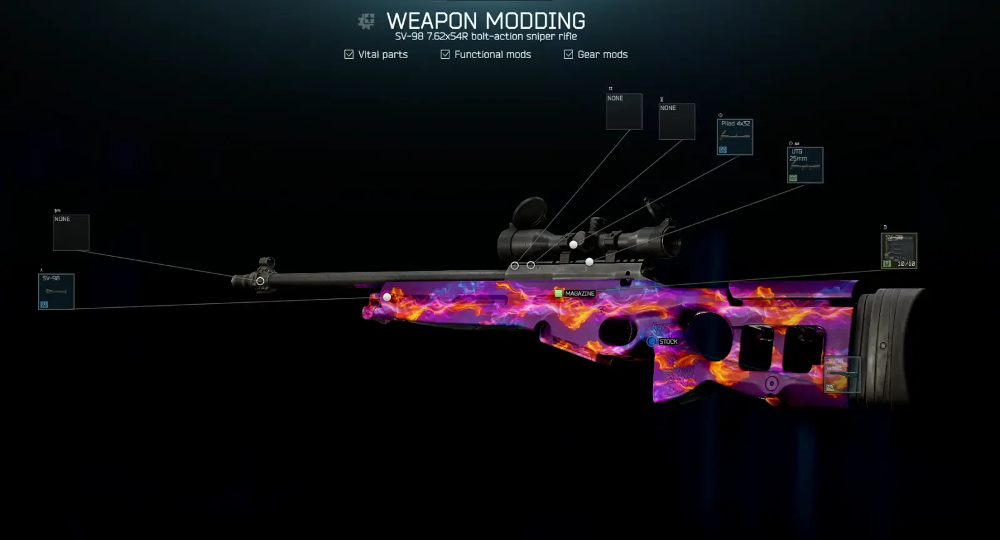
Hohloma
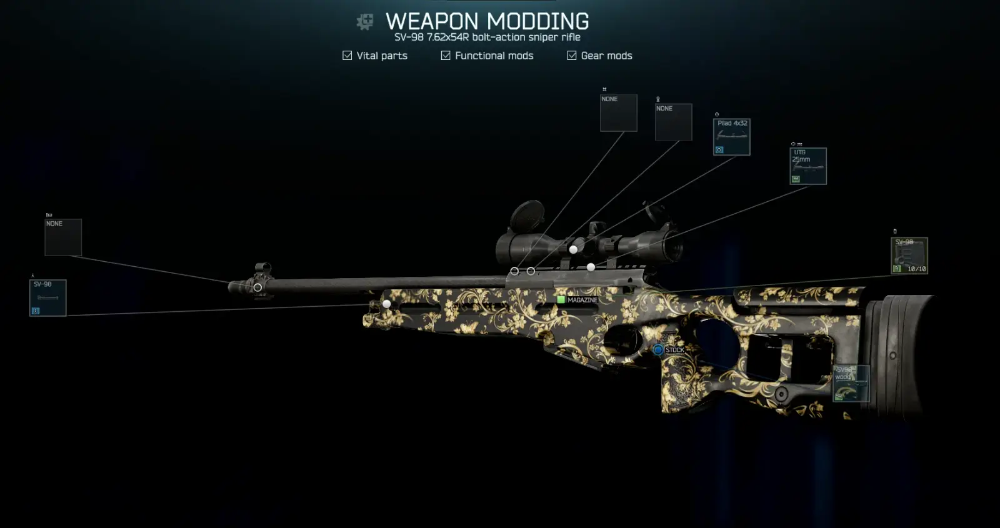
Gray Wolf
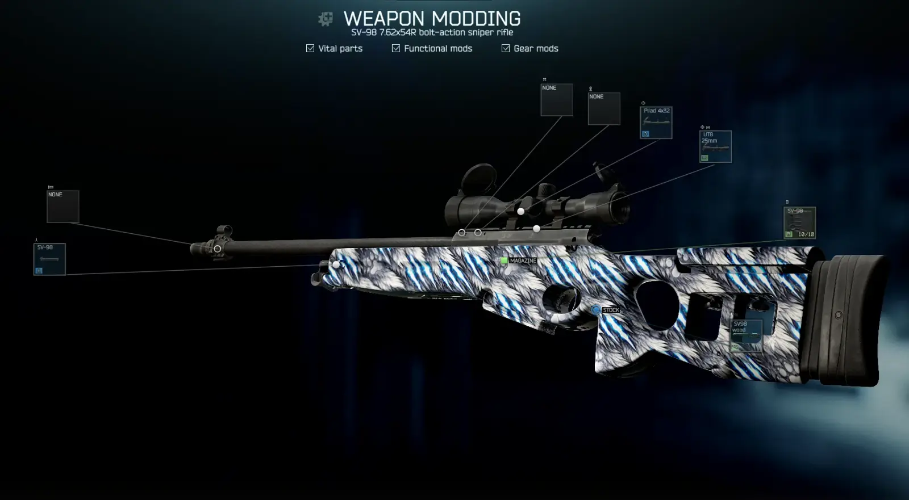
Silver Raven
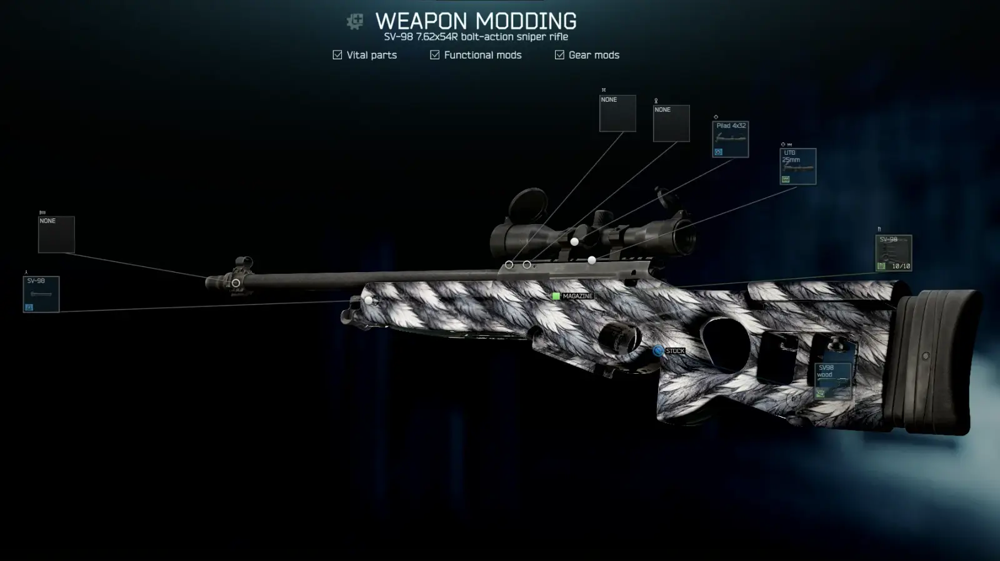
White Tiger
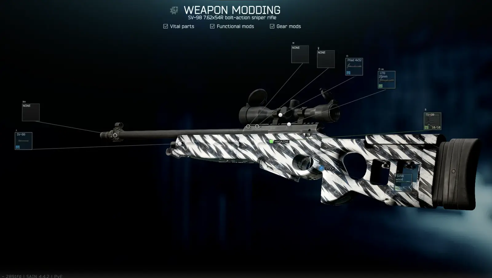
Stylized Dragon Scales
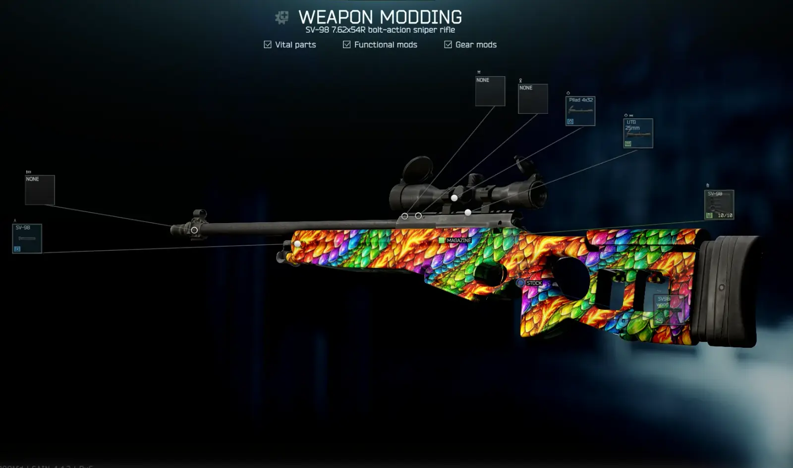
Savage Hornet
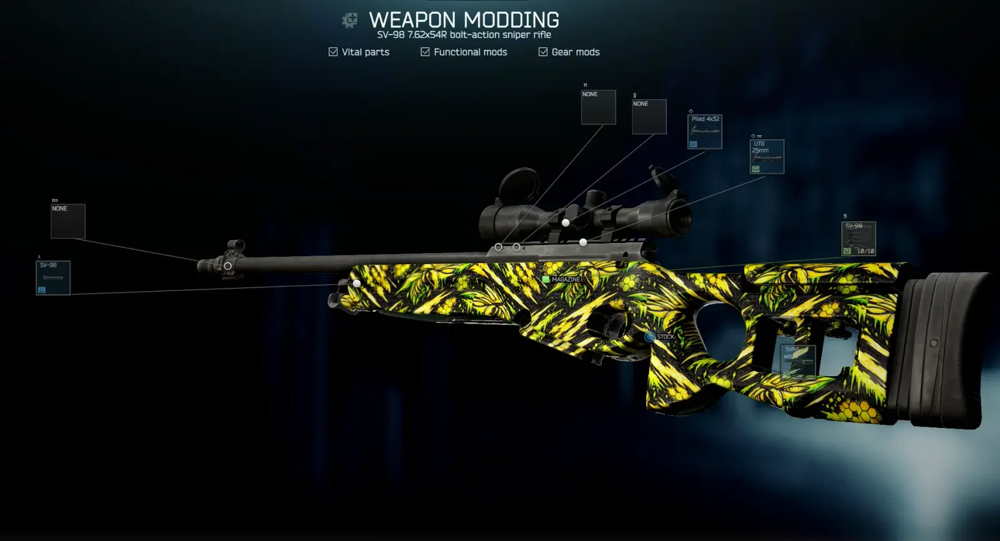
Black Market Imports™
Smuggled patterns, reworked for the Norvinsk region. Rumored to have surfaced years ago between the alleys of Mirage, the Dust of forgotten compounds, and the fire-scarred halls of Inferno, these finishes now circulate through THE CITY’s underground trade.
Basically skin from shooter games remade for simple use, just a texture remembrance of the original skin
- Crimson Batik
- Sienna Damask
- Snake Pit
- +++
Turretline Imports™
Recovered combat patterns, repurposed for the Norvinsk region. Once seen on reinforced hulls and turret platforms in distant combat circuits, these finishes were stripped down and rebuilt for THE CITY’s underground workshops.
Basically skin from war and tank games remade for simple use, just a texture remembrance of the original skin
- Afterburner
- Hohloma
- More Incoming
Colors
Simple colors for general usage
- Mono Red
- Mono Coral
- Mono Orange
- Mono Gold
- Mono Yellow
- Mono Apple
- Mono Aquamarine
- Mono Azure
- Mono Blue
- Mono Violet
- Mono Fuschia
- Mono Dark Red
- Mono Dark Green
- Texture White
- Texture Black
- Texture Metallic
Forest Textures
- Classic Woodland
- German Flecktarn
- U.S. M81 Woodland
- +++
Desert Textures
- Desert Tri-Color
- Classic DCU
- MultiCam Arid
- +++
Snow Textures
- Pure White Snow Camo
- White Splinter
- Snow & Ice
- +++
Urban Textures
- Urban Gray
- Urban Digital
- Cracked Asphalt
- +++
Military Textures
- MultiCam Black
- MultiCam Red
- MultiCam Blue
- +++
Material Textures
- Carbon Fiber
- Brushed Steel
- Burnt Metal
- +++
Natural Textures
- Tree Bark
- Burnt Trunk
- Gray Stone
- +++
Animal Textures
- Green Snake Skin
- Black Snake Skin
- Desert Viper Skin
- +++
Historic Textures
- Classic Olive Drab
- Retro SWAT Matte Black
- Vietnam Tiger Stripe
- +++
TarkovLike Textures
- Contractor Gray
- PMC Sand
- PMC Forest
- +++
Modern Premium Textures
- Satin Black
- Absolute Matte Black
- Pearl White
- +++
Special Textures
Future Update, some weird and colorful textures will be included here
- Purple Urban
- Neon Strike
What’s next? I’m currently working in another mod for THE CITY, so this addon here will suffer a bit… I still have all planned, just gonna delay the next updates
Version
0.5.0
Mod Version updated to 0.5.0
OxiPNG File Size Optimization
Black Market Imports™ | Industrial Grade
Smuggled patterns, reworked for the Norvinsk region. Rumored to have surfaced years ago between the alleys of Mirage, the Dust of forgotten compounds, and the fire-scarred halls of Inferno, these finishes now circulate through THE CITY’s underground trade.
- Added 133 Black Market Import Texture from Skins
Cold Fusion
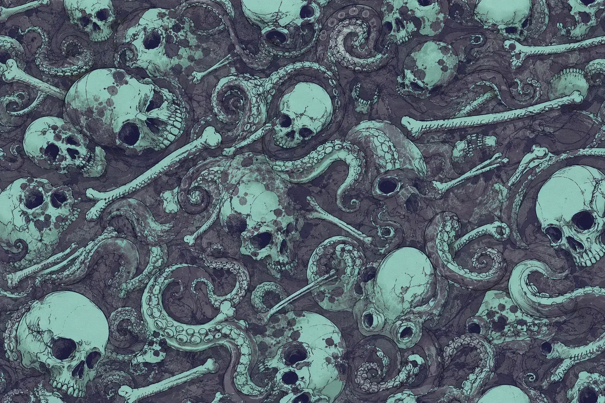
Mainframe
Motherboard
Neon Squeezer
Phoenix Marker
Contamination
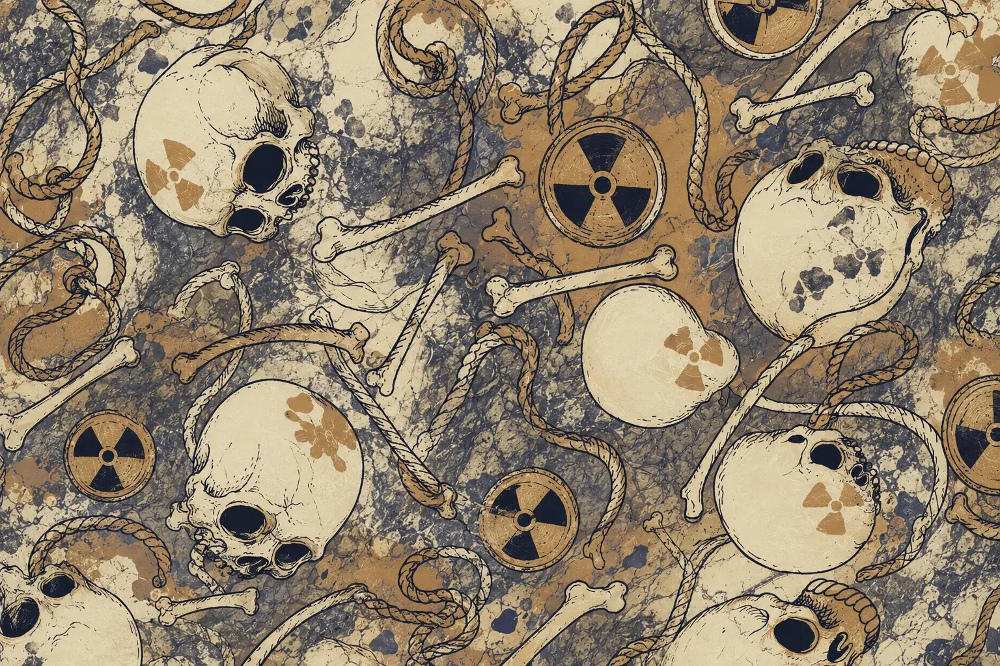
Version
0.4.0
Mod Version updated to 0.4.0
OxiPNG File Size Optimization
Black Market Imports™
Smuggled patterns, reworked for the Norvinsk region. Rumored to have surfaced years ago between the alleys of Mirage, the Dust of forgotten compounds, and the fire-scarred halls of Inferno, these finishes now circulate through THE CITY’s underground trade.
- Added 147 Black Market Import Texture from Skins
Snake Pit
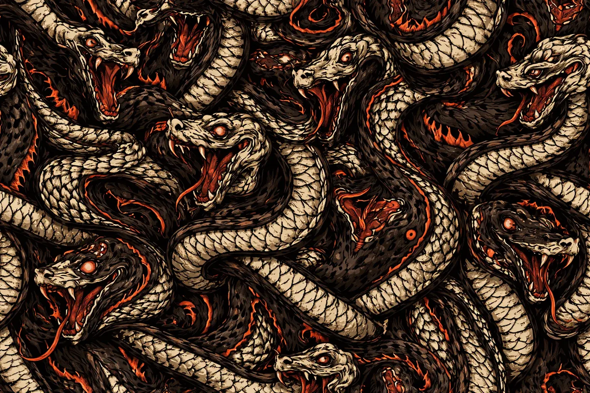
Crimsom Batik
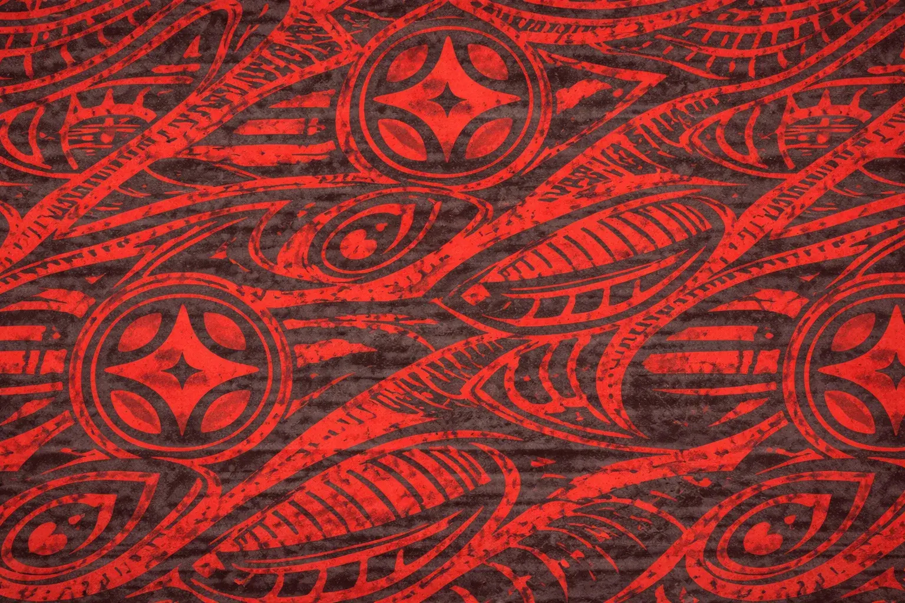
Version
0.3.0
Mod Version updated to 0.3.0
OxiPNG File Size Reduction
Zip File Size increased from 544MB to 578MB (Optimized)
- Added a new preset
- SAG AK-545 blank
- Glock 19X blank
- SV-98 Champagne Gold
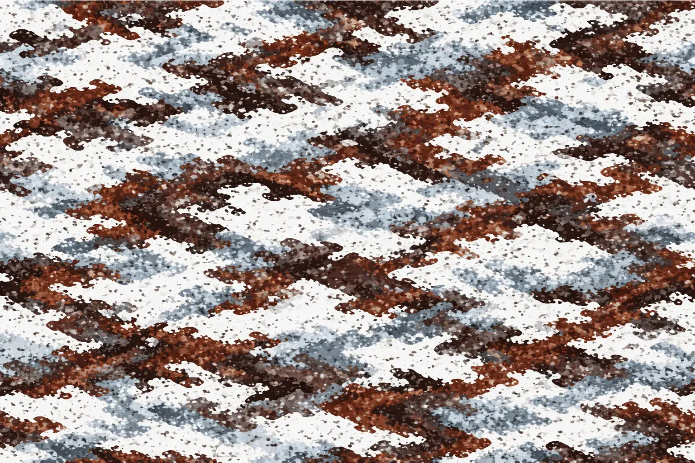
- Added Historic Camo
- Historic_Camo_1_Classic Olive Drab
- Historic_Camo_2_Retro SWAT Matte Black
- Historic_Camo_3_Vietnam Tiger Stripe
- Historic_Camo_4_Desert Storm
- Historic_Camo_5_WWII Winter Wash
- Historic_Camo_6_Worn WWII Olive
- Historic_Camo_7_Stalingrad Ice & Rust
- Historic_Camo_8_Cold War Green
- Historic_Camo_9_Soviet Surplus
- Historic_Camo_10_80s NATO
- Historic_Camo_11_Balkan Urban
- Historic_Camo_12_Washed Retro Flecktarn
- Historic_Camo_13_Faded Woodland
- Historic_Camo_14_Improvised Spray Paint
- Historic_Camo_15_Handmade Guerrilla
- Historic_Camo_16_Tape & Paint Improvised
- Historic_Camo_17_Balkan Guerrilla Camo
- Historic_Camo_18_Russian Surplus-Inspired Pattern
- Historic_Camo_19_Militia Pattern
- Historic_Camo_20_Old-School PMC Pattern
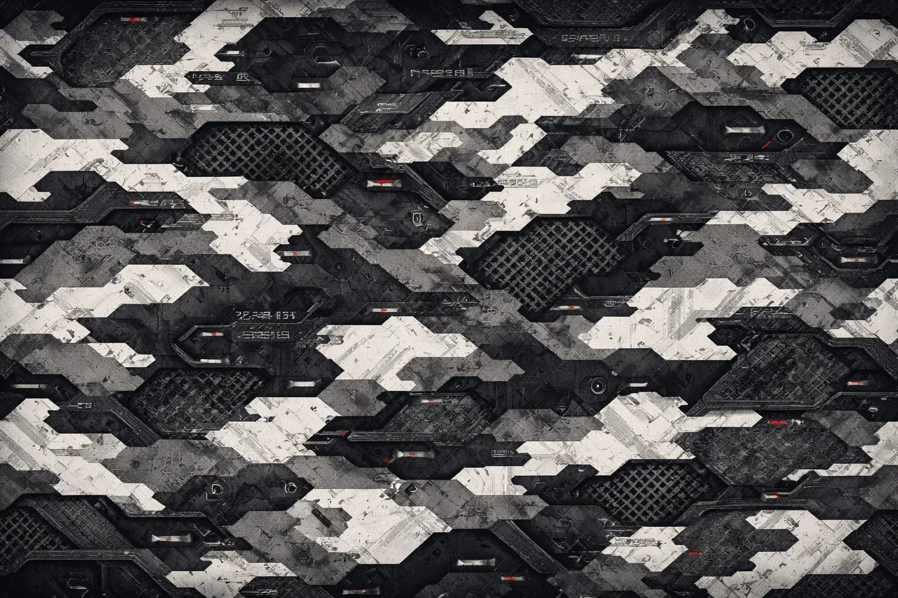
- Added TarkovLike Camo
- TarkovLike_Camo_1_Contractor Gray
- TarkovLike_Camo_2_PMC Sand
- TarkovLike_Camo_3_PMC Forest
- TarkovLike_Camo_4_Matte Black Ops
- TarkovLike_Camo_5_Low-Profile Slate
- TarkovLike_Camo_6_Raider Rust
- TarkovLike_Camo_7_Industrial THE CITY
- TarkovLike_Camo_8_BEAR-Inspired Red & Black
- TarkovLike_Camo_9_USEC-Inspired Tan & Gray
- TarkovLike_Camo_10_Urban Mercenary
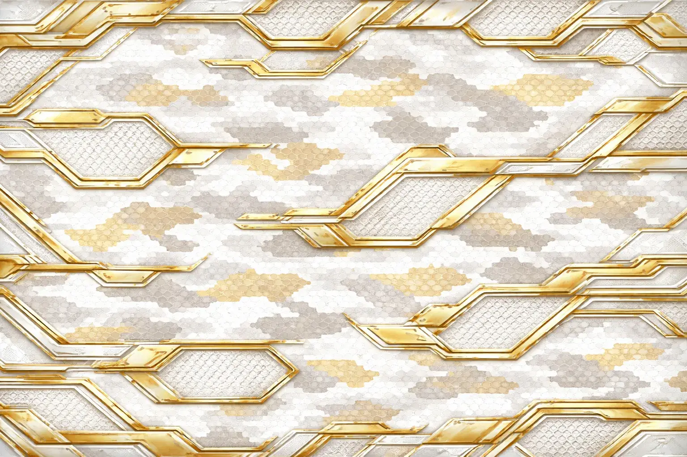
- Added Modern Premium Camo
- Modern Premium_Camo_1_Satin Black
- Modern Premium_Camo_2_Absolute Matte Black
- Modern Premium_Camo_3_Pearl White
- Modern Premium_Camo_4_Titanium Gray
- Modern Premium_Camo_5_Gunmetal
- Modern Premium_Camo_6_Midnight Blue
- Modern Premium_Camo_7_Premium Olive Green
- Modern Premium_Camo_8_Desert Bronze
- Modern Premium_Camo_9_Tactical Champagne Gold
- Modern Premium_Camo_10_Dark Rose Gold
- Modern Premium_Camo_11_Burnt Copper
- Modern Premium_Camo_12_Anodized Purple
- Modern Premium_Camo_13_Metallic Dark Red
- Modern Premium_Camo_14_Petrol Blue
- Modern Premium_Camo_15_Metallic Military Green
- Modern Premium_Camo_16_Naval Gray
- Modern Premium_Camo_17_Black & Gold Accents
- Modern Premium_Camo_18_White & Gold
- Modern Premium_Camo_19_Black & Copper
- Modern Premium_Camo_20_Obsidian Black
Version
0.2.0
Mod Version updated to 0.2.0
Zip File Size increased to 544MB
- Some Textures have their name changed.
- If you have duplicates, delete ’UtanuManer“ folder and extract again.
New Presets (1)
- SV-98 blank
New Colors - Mono (11)
- Red
- Coral
- Orange
- Gold
- Yellow
- Apple
- Aquamarine
- Azure
- Blue
- Violet
- Fuschia
New Colors - Dark Mono (2)
- Dark Red
- Dark Green
New Colors - Texture (3)
- White
- Black
- Metallic
New Forest Camo (2)
- Forest_Camo_12_European Woodland
- Forest_Camo_13_Pine Forest
New Military Camo (18)
- Military_Camo_8_Red & Black Digital
- Military_Camo_9_Navy Digital
- Military_Camo_10_White & Gray Digital
- Military_Camo_11_Modern Splinter Camo
- Military_Camo_12_Neon Splinter
- Military_Camo_13_Classic Tiger Stripe
- Military_Camo_14_Desert Tiger Stripe
- Military_Camo_15_Urban Tiger Stripe
- Military_Camo_16_Ice Tiger Stripe
- Military_Camo_17_Rhodesian Brushstroke
- Military_Camo_18_Retro ERDL
- Military_Camo_19_Lizard Camo
- Military_Camo_20_British DPM
- Military_Camo_21_Stylized CADPAT
- Military_Camo_22_Kryptek-Inspired
- Military_Camo_23_Matte Low-Vis Pattern
- Military_Camo_24_Reverse Camo
- Military_Camo_25_Asymmetric Camo
New Material Camo (4)
- Material_Camo_18_Dry Mud
- Material_Camo_19_Wet Mud
- Material_Camo_21_Black Resin
- Material_Camo_22_Hammered Surface
New Natural Textures (20)
- Natural_Camo_1_Tree Bark
- Natural_Camo_2_Burnt Trunk
- Natural_Camo_3_Gray Stone
- Natural_Camo_4_Volcanic Rock
- Natural_Camo_5_Granite
- Natural_Camo_6_Dark Marble
- Natural_Camo_7_Fractured White Marble
- Natural_Camo_8_Obsidian
- Natural_Camo_9_Wet Moss
- Natural_Camo_10_Lichen
- Natural_Camo_11_Red Earth
- Natural_Camo_12_Autumn Leaves
- Natural_Camo_13_Dry Leaves
- Natural_Camo_14_Swamp Mud
- Natural_Camo_15_Murky Water
- Natural_Camo_16_Dark Algae
- Natural_Camo_17_Snow-Covered Rock
- Natural_Camo_18_Frozen Ground
- Natural_Camo_19_Exposed Roots
- Natural_Camo_20_Subtle Floral Camo
New Animal Textures (34)
- Animal_Camo_1_Green Snake Skin
- Animal_Camo_2_Black Snake Skin
- Animal_Camo_3_Desert Viper Skin
- Animal_Camo_4_Crocodile Skin
- Animal_Camo_5_Fantasy Reptile Scales
- Animal_Camo_6_Tactical Zebra
- Animal_Camo_7_Dark Orange Tiger
- Animal_Camo_8_White Tiger
- Animal_Camo_9_Shadow Leopard
- Animal_Camo_10_Fire Leopard
- Animal_Camo_11_Dark Jaguar
- Animal_Camo_12_Sand Cheetah
- Animal_Camo_13_Cartoon Sand Cheetah
- Animal_Camo_14_Gray Wolf
- Animal_Camo_15_Matte Black Raven
- Animal_Camo_16_Silver Raven
- Animal_Camo_17_Brown Eagle
- Animal_Camo_18_Cartoon Brown Eagle
- Animal_Camo_19_Insect Carapace
- Animal_Camo_20_Venomous Spider
- Animal_Camo_21_Iridescent Beetle Shell
- Animal_Camo_22_Stylized Dragon Scales
- Animal_Camo_23_Dark Dragon Breath
- Animal_Camo_24_Emerald Wyvern
- Animal_Camo_25_Minotaur Fury
- Animal_Camo_26_Cartoon Sharks
- Animal_Camo_27_Only Sharks
- Animal_Camo_28_Shark Scales
- Animal_Camo_29_Polar Bear Fur
- Animal_Camo_30_Metal Scales
- Animal_Camo_31_Albino Python Skin
- Animal_Camo_32_Phantom Lynx
- Animal_Camo_33_Iron Scorpion
- Animal_Camo_34_Savage Hornet
Version
0.1.1
Structure Change
Version 0.1.1
- Moved folder 7Bpencil.WeaponCamoAndStickers from SPT/user/mods to BepInEx/plugins
Follow the main mod instructions and you’ll be fine ;)
Version
0.1.0
Version 0.1.0
Added
- 13 Forest Textures
- 16 Desert Textures
- 15 Snow Textures
- 15 Urban Textures
- 7 Military Custom Textures
- 17 Material Textures
- 4 Special Textures
Installation:
Just extract in the main folder.